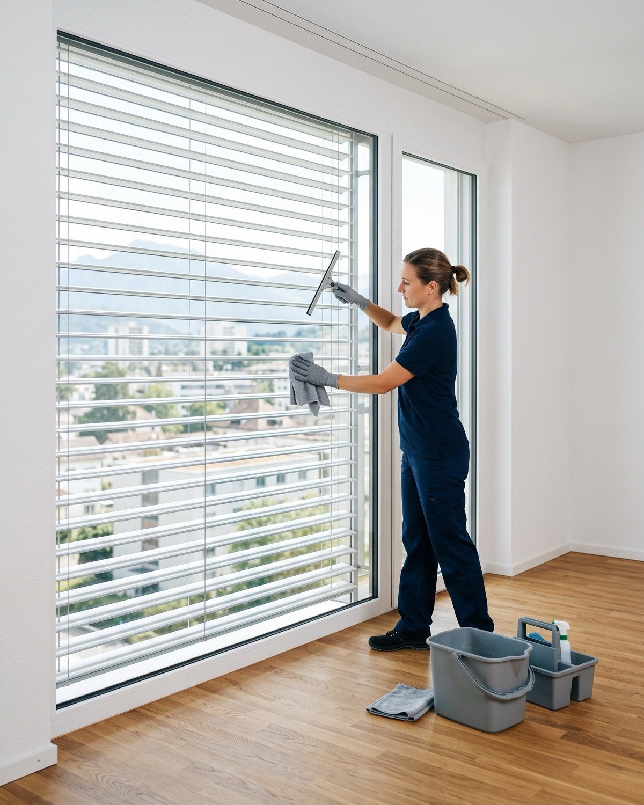
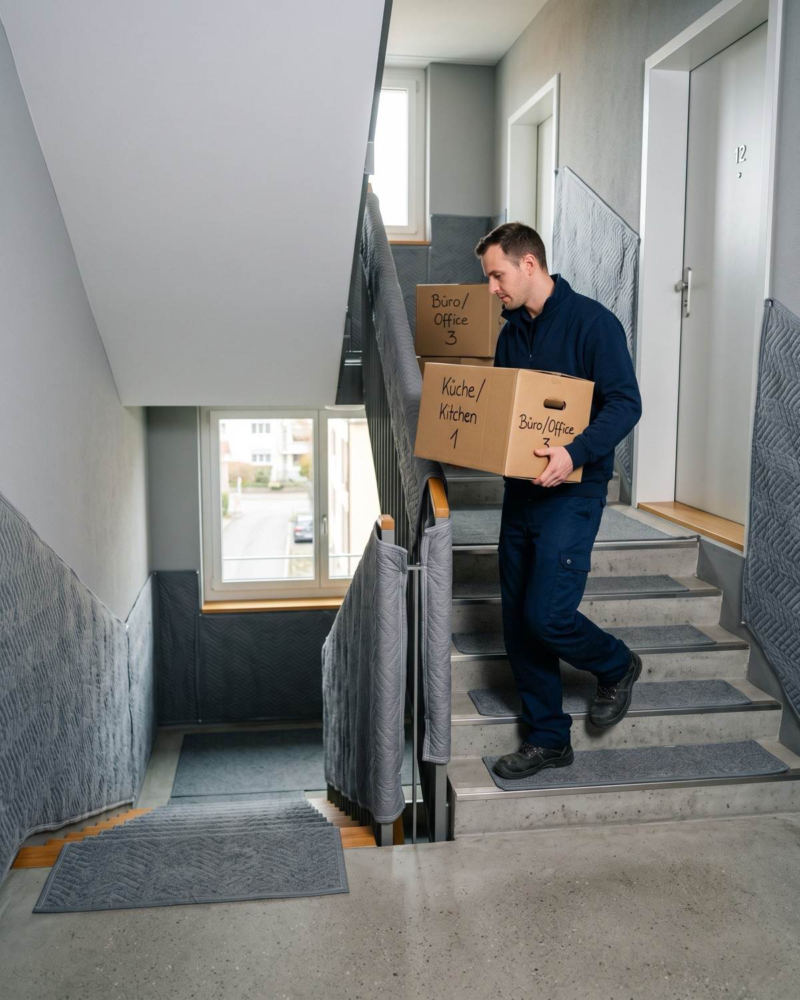

Cucina
Cappa sgrassata e filtri puliti, forno e piastre senza tracce, frigorifero e congelatore sbrinati, lavastoviglie e relativi filtri.
Un protocollo completo, locale per locale, conforme alle esigenze delle amministrazioni svizzere. Il nostro responsabile è presente alla riconsegna dell'appartamento e torna gratuitamente se l'amministrazione formula un'osservazione.


Cappa sgrassata e filtri puliti, forno e piastre senza tracce, frigorifero e congelatore sbrinati, lavastoviglie e relativi filtri.
Rimozione completa del calcare da rubinetti, rompigetto e soffioni, pareti doccia e vasca senza calcare, fughe trattate, WC decalcificati.
Vetri interni ed esterni, telai, lamelle delle tapparelle e cassonetti.
Prese e interruttori, radiatori, porte e maniglie, armadi, pavimenti aspirati e lavati.
Balcone o terrazza, parapetti, cantina e solaio, su opzione.
Il nostro responsabile assiste alla riconsegna dell'appartamento. In caso di osservazioni, interveniamo a nostre spese fino alla firma.
Vetri, tapparelle, forno, cappa e rimozione del calcare sono compresi nel forfait. Gli importi sono IVA inclusa.
| Abitazione | Forfait IVA incl. |
|---|---|
| 6 locali e più, casa | su sopralluogo |
| Balcone o terrazza | + CHF 95.– |
| Cantina o solaio | + CHF 65.– |
| Offerta combinata con il trasloco | − 10 % |
Un'abitazione molto sporca o lavori particolari (moquette, tracce di nicotina) comportano un supplemento indicato nell'offerta, dopo il sopralluogo.
Valutiamo l'abitazione sul posto o a distanza e fissiamo il forfait.
La squadra interviene il giorno prima o la mattina della riconsegna.
Il nostro responsabile verifica ogni locale con la nostra check-list.
Siamo presenti con l'amministrazione fino alla firma.
Imballaggio, smontaggio, trasporto e rimontaggio a cura di una squadra fissa. Tutto ciò che lascia la Sua abitazione viene inventariato e controllato all'arrivo.
Da CHF 56.– al m³, IVA inclusa
Scoprire : Trasloco privato
In genere il giorno prima o la mattina stessa della riconsegna, una volta svuotata l'abitazione. Fissiamo l'orario con Lei in base all'appuntamento con l'amministrazione.
Se durante la riconsegna l'amministrazione formula un'osservazione sulla pulizia, correggiamo subito o torniamo a nostre spese, fino alla firma. La garanzia non copre danni né l'usura dell'abitazione.
Non durante la pulizia: basta consegnarci le chiavi. La Sua presenza alla riconsegna è consigliata, accanto al nostro responsabile.
Lo shampoo della moquette non è compreso nel forfait. È proposto come opzione, con un prezzo indicato nell'offerta.
Richieda il Suo forfait: 10 % di sconto se trasloca con noi.